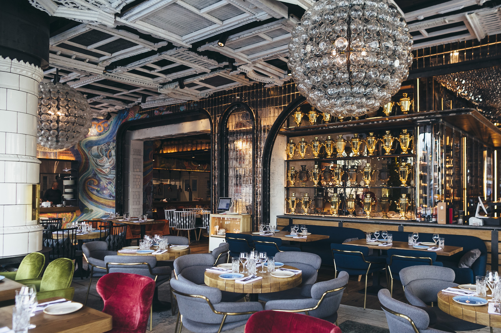
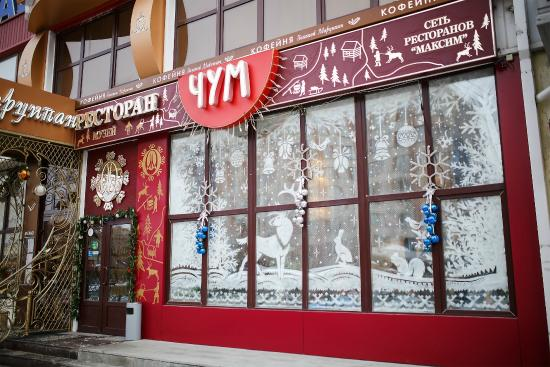
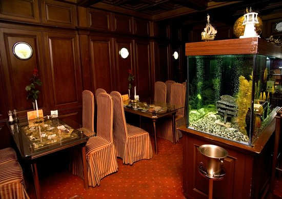
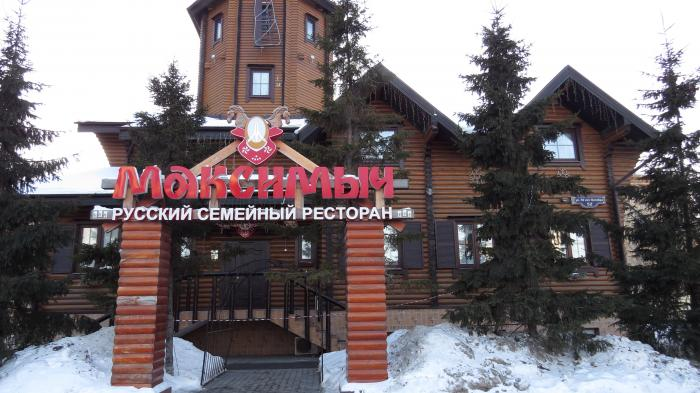
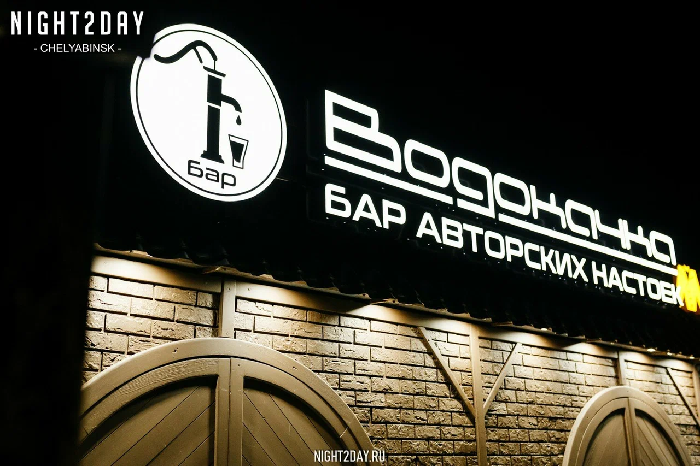

Сибирь.Сибирь
Ресторан #СибирьСибирь в Тюмени от Дениса Иванова - обаятельное сочетание уюта и торжественности! Остроумные, экологически продуманные дизайнерские решения: стены из стеклянных кирпичей, резные деревенские ставни на потолке, коллекционные артельные матрешки. Коктейли и настойки на таежных ягодах, 29 000 столовых ложек. Одни увидят в них намек на северное сияние, другие – кольчугу богатыря или рябь сибирской реки. Сердце ресторана – открытая кухня, оформленная стилизованной советской мозаикой. Здесь можно увидеть, как летят на ледяное плато стружки строганины из муксуна и стерляди, варят тысячи порций знаменитых сибирских пельменей, заправляют сметаной белые грузди, выжимают молоко из кедровых орешков, украшают жимолостью черемуховые пироги, фламбируют на французский манер оленину. Северные деликатесы, хиты праздничной советской кухни, блюда из дичи, речной рыбы, таежных дикоросов, традиционная и современная русская кухня, — все это ресторан #СибирьСибирь. Большинство поставщиков ресторана – местные производители. Деликатесы севера, авторский взгляд на русских кухню от шеф-повара Евгения Кузнецова.
ЧУМ.
Ресторан-музей «Чум» – единственный в своем роде ресторан северной кухни, уникальное заведение не только для Тюмени, но и для России, настоящая визитная карточка города. Работает ресторан с 15 июня 2007 года, на открытии побывал настоящий хантыйский шаман – до сих пор один из уголков заведения считается магическим: говорят, если загадать желание в этом месте, оно обязательно исполнится. С самого начала особой популярностью в меню «Чума» пользуется строганина из муксуна, нельмы и стерляди на ледяной глыбе. Всё меню ресторана — из местных продуктов, большинство блюд являются уникальными, поэтому в другом месте не попробовать: например, колбаски из медвежатины, запечённые язычки кролика в сливках, дичь на мраморном камне или мочёную морошку, рецепт которой держится в секрете с момента открытия ресторана. В must eat также можем перечислить строганину из муксуна, которую в ресторане подают на ледяной глыбе. Кстати, для особого эффекта шеф-повар Наталья Трапезникова проводит мастер-класс по нарезке строганины. Сердце оленя с горячей вишней и варенье из вороники – тоже местный гастрономический колорит. Как и сосьвинская селёдка, которая с давних времён считается царской рыбой: она водится только в реке Сосьва (Свердловская обл, бассейн Тобола), и ловят её лишь раз в год. Отведать всё это можно под сенью настоящего хантыйского чума, который установлен в нашем ресторане, — он построен из просаленной бересты по всем правилам, украшен шкурами и рисунками. Правда, места в чуме всегда надо заказывать заранее. «Чум» – единственный ресторан Тюмени, который приглашают на гастрономические гастроли с блюдами северной кухни в другие города России.
Посейдон.
История «Посейдона» триумфально продолжается уже на протяжении 22 лет. Его уникальный характер приобретает новые современные черты на новом витке десятилетия — это по-прежнему первоклассный рыбный ресторан для ценителей безупречного сервиса и высокой кухни, где знают все о рыбе и морепродуктах и тщательно следят за качеством и трендами — но уже в современном интерьере и с усиленной командой. Ресторан перезапущен в партнерстве с известным столичным бренд-шефом Андреем Шмаковым — основателем ресторана Savva в столичном «Метрополе» и обладателем звезды Michelin, чье имя само по себе является гарантом качества и обещает яркий опыт жителям и гостям Тюмени. Новое пространство получилось камерным (всего 60 посадочных мест), стильным и уютным. С первых минут «Посейдон» телепортирует к океану, прямиком на борт современного лайнера. Интерьер ресторана — светлый, элегантный, в прохладной океанской цветовой гамме — выполнен в корабельной тематике с использованием натуральных материалов. На полу — палубная доска, покрытая корабельным лаком, на входе — изящная композиция с кораллами на фоне обтекаемого, как в трюме, зеркала. Стены украшают барельефы с морскими обитателями, главный акцент – открытая кухня с хрустальными фризами, заметными из любой точки зала, и эффектно подсвеченный бар с морепродуктами .
“Максимыч”
РЕСТОРАН-УСАДЬБА В ЛУЧШИХ ТРАДИЦИЯХ РУССКИХ ГУЛЯНИЙ С БЛЮДАМИ РУССКОЙ КУХНИ РАЗНЫХ ЭПОХ. 1 августа 2008 года в Тюмени открылся необыкновенный ресторан в настоящем русском тереме. Само здание ресторана стало одной из городских достопримечательностей. Здесь все кажется необыкновенным: высокое крыльцо, внутренняя отделка, теплые во всех смыслах и очень уютные залы и богатое меню, в котором можно найти блюда русской кухни, традиционные для разных областей России, и кухню исконно сибирскую. Этот ресторан-усадьба в лучших традициях русских гуляний – обязательный пункт программы посещения Тюмени. Мы помогаем нашим гостям почувствовать праздник каждый день и узнать всю широту русской души. Здесь готовят блюда из фермерских продуктов по традиционным рецептам, используя характерные для русской кухни способы приготовления: томление в печи, мочение, соление и т.д. Ресторану удалось воссоздать забытые вкусы позапрошлого столетия, привнеся свое авторское «я» в некоторые вполне привычные блюда. Вы только вслушайтесь в эти названия: Студень специальный из живности разной. Взято для него было копыт свиных, лыток коровьих, хвостов бычьих, да куру целиком Блины по-деревенски с разварным мясом гуся, кашей гороховой и подливой сливочной Кулеш с рыбой речной, крупой перловой да с мясом грудки глухаря Котлета не в Киеве, а в Тюмени делана из куры домашней, да стружкой глухаря с пеньком картофельным и глазуньей Муксун жареный на оладьях из кабачка тертого, запечен со сметаной и желтком куриным В «Максимыче» два зала: банкетный до 70 человек и зал с шестью уютными кабинками, каждая из которых рассчитана на 8 гостей. Средний чек в заведении – 2000-2300 рублей.
Бар «Водокачка»
расположен в самом популярном месте Тюмени — на Набережной, в историческом здании первой водонасосной станции в Западной Сибири. Очень долго это здание стояло заброшенным, но в декабре 2022 года сложились все звёзды и компания “Максим” решила дать станции вторую жизнь. Так и зародилась «Водокачка»! В баре ты найдешь авторские тематические коктейли и разнообразное меню кухни - от простых закусок под напитки до полноценного ужина, вечеринки с диджеями каждую неделю и тот самый единственный в России интерактивный бар. Интерактивный бар — механизм, благодаря которому можно самому наливать себе классические и авторские коктейли, пиво, вино и лимонады! Казалось бы, ничего необычного, но представь, что больше не нужно ждать ни официанта, ни бармена, а просто пополнить депозитную карту и наслаждаться любимыми напитками когда захочется!